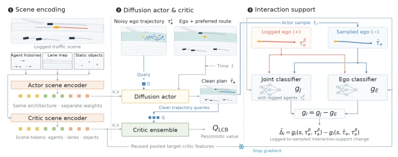
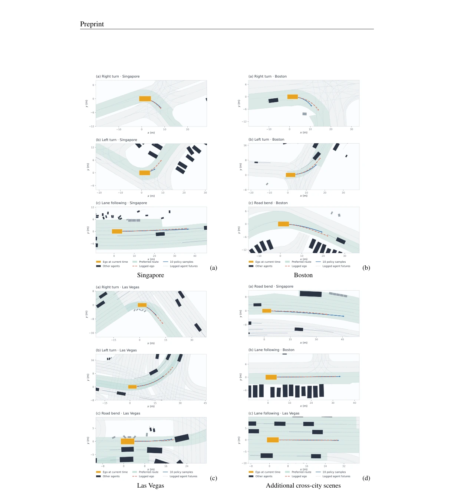
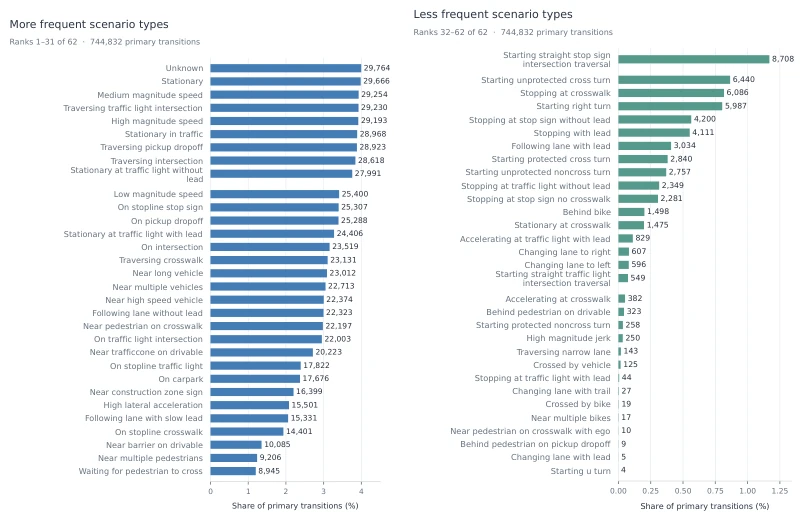

This paper attempts to address the "focusing on the head but neglecting the tail" problem of offline reinforcement learning in autonomous driving. The authors keenly point out that existing methods only focus on whether the ego-vehicle trajectory is common, but ignore whether the interaction between the ego-vehicle trajectory and surrounding vehicles is reasonable. ICDP separates out Interaction Distribution Shift (IDS) through contrastive learning, which sounds very appealing. However, using two classifiers to estimate the density ratio incurs significant computational overhead and relies on the quality of offline data. Achieving top rankings on nuPlan is indeed gratifying, but the real-world truck experiments only show qualitative demonstrations, lacking quantitative metrics, raising some suspicion of "showing off strength". However, explicitly formulating interaction constraints is indeed more reasonable than blind regularization, worthy of a positive review, but do not expect it to solve all long-tail interaction problems. Furthermore, this method assumes surrounding vehicle trajectories are fixed, does not consider prediction errors, which may become a bottleneck in dynamic environments.
研究动机Motivation
自动驾驶规划需安全高效，在线 RL 太贵，模仿学习（IL）无法超越数据（Bojarski et al., 2016; Codevilla et al., 2019）。离线 RL 虽能利用固定数据（Levine et al., 2020），但分布偏移导致价值估计不可靠。现有方法（Kumar et al., 2020; Kostrikov et al., 2021）主要约束自车动作空间，忽略了交互环境。在自动驾驶中，自车轨迹可能符合数据分布，但与周围车辆轨迹组合后却极罕见（Interaction Distribution Shift, IDS）。这导致策略可能选择高价值但交互不兼容的轨迹，引发安全隐患。如何既优化奖励又保持交互支持，是核心问题。现有工作多关注单智能体，缺乏对多车交互联合分布的支持控制，限制了策略在复杂场景下的泛化能力。
Autonomous driving planning requires safety and efficiency; online RL is too expensive, and imitation learning (IL) cannot surpass the data (Bojarski et al., 2016; Codevilla et al., 2019). Although offline RL can utilize fixed data (Levine et al., 2020), distribution shift leads to unreliable value estimation. Existing methods (Kumar et al., 2020; Kostrikov et al., 2021) mainly constrain the ego-vehicle action space, ignoring the interaction environment. In autonomous driving, the ego-vehicle trajectory may conform to the data distribution, but when combined with surrounding vehicle trajectories, it becomes extremely rare (Interaction Distribution Shift, IDS). This leads to the policy potentially selecting high-value but interaction-incompatible trajectories, causing safety hazards. How to optimize rewards while maintaining interaction support is the core problem. Existing work mostly focuses on single agents, lacking support control over the joint distribution of multi-vehicle interaction, limiting the policy's generalization ability in complex scenarios.
The ICDP framework includes scene encoding, a diffusion policy Actor, and an interaction support module. First, the Actor generates candidate ego-vehicle trajectory chunks, and the Critic evaluates value. The core innovation lies in the IDS constraint. The authors prove that joint support degradation can be decomposed into ego-vehicle marginal support (ΔE) and interaction support (ΔI). ΔI is IDS. Directly estimating joint density is difficult, so contrastive density ratio estimation is proposed: training a joint classifier (distinguishing real interactions from ego-vehicle trajectory + surrounding trajectories) and an ego-vehicle classifier (distinguishing real ego-vehicle from candidate ego-vehicle). The residual of the two is the IDS estimate (Theorem 1). The optimization objective includes value maximization, ego-vehicle regularization, interaction regularization, and behavior cloning loss. The NSPG algorithm is used to update the diffusion policy. This design avoids explicit joint density modeling, reduces computational complexity, while retaining the precision of interaction constraints.

Figure 1: Overview of ICDP. The logged scene is encoded into structured scene features used by the diffusion actor and critic. The actor generates candidate ego trajectories, which are evaluated by a pessimistic chunk-level critic and by the interaction-support module. The latter combines a joint ego–agent classifier with an ego-only classifier; their residual score isolates interaction-specific support and yields the IDS estimate used to constrain policy improvement.
On benchmarks such as nuPlan Val14, Test14-Hard, ICDP outperforms baselines such as PDM-Open, GameFormer, Diffusion Planner (Table 1). Especially under reactive evaluation, ICDP scores the highest, reaching 78.34 on Test14-Hard. Control experiments show that after adding interaction constraints, ICDP performs better than unconstrained Offline RL and BC (Table 2). Ablation experiments indicate that interaction regularization strength λI=1 yields the best effect, and performance is stable when the number of surrounding vehicles is 48. Real-world deployment was conducted on a truck, demonstrating qualitative effects in overtaking and curve scenarios (Figure 4), but no quantitative metrics were provided. The dataset distribution plot (Figure 5) shows that long-tail scenarios are handled appropriately.
其他图片Other Figures

Figure 4: Qualitative trajectory samples from the learned diffusion policy across diverse nuPlan scenes. Each panel shows ten independently generated ego trajectories together with the logged ego trajectory, preferred route, and surrounding traffic. Samples are shown directly without critic-based selection or post-processing.

Figure 5: Distribution of scenario types in the processed offline dataset. The 62 recorded categories are divided into more- and less-frequent groups to make the long-tailed distribution legible.